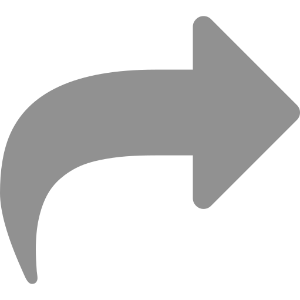

Baby Gorillas Being Naughty - Cutest Compilation
962,706 views•Mar 8, 2017 5.4K 300  SAVE
AnimalTV
57.1K subscribers
Gorillas are wonderful animals that like to beat their chests when they want to show their strength. Adult gorillas can look very intimidating when they do this but baby gorillas just look clumsy!
337 Comments
 Add a public comment
Add a public commentRed Bone 2 years ago
2:01 the little cuttie tried to beat his own chest and he knocked himself over. LOL!
Red Bone 2 years ago
2:01 the little cuttie tried to beat his own chest and he knocked himself over. LOL!
Red Bone 2 years ago
2:01 the little cuttie tried to beat his own chest and he knocked himself over. LOL!
Red Bone 2 years ago
2:01 the little cuttie tried to beat his own chest and he knocked himself over. LOL!